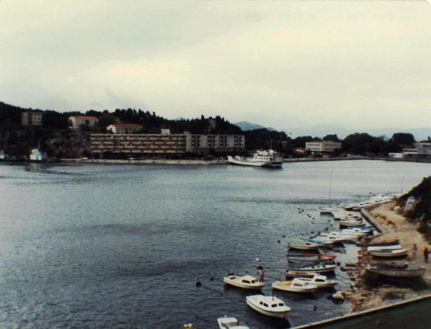

Inter Rail 1984 Day 14
Saturday 15th September 1984

Had to change money on arrival in Kardeljevo/Ploce as a result of the dropped money belt incident where my cash
got snaffled, possibly by the ticket man. They were not incredibly helpful in the tourist offices either at the station or in town. Kardeljevo
has only one hotel, Hotel Ploca. The equivalent of £8.80 a night, bed and breakfast. We decided to splash out and blow the budget. Room
was upstairs. First task was to go to the loo. Next up was a long hot shower for each of us. It felt wonderful to be actually clean again
after 3 succesive nights on trains.
Had a glass of wine each and then had a lovely long sleep in the afternoon. Jon woke up first so he went shopping. He bought a nice piece of
bread for 20p. We had our evening meal in our room. Bread with pate and mustard. We though it was going to be pate and cream cheese but the
cream cheese turned out to be a tube of mustard! Also had a bottle of the red wine we had bought in Belgrade. It cost us the grand total of
31.5p. It actually tasted OK.
Decided we needed some fresh air, so went for a walk round the point. The Adriatic is very clear and shelves off into deep water very quickly.
We found a number of shack houses around the corner with their own landing stage. 1 guy came home from his fishing trip with what looked like
a thresher shark. He proceeded to throw his remaining bait to one of the local cats who had appeared on the scene. He then started to cut his
fish up. He peeled the skin off in strips.
We couldn't get around the headland without clambering on the rocks so went back to the hotel. Booked in for another night which had the
benefit of stopping the maid coming in and seeing the absolute tip left by the empty rucksacks.
We sat on the balcony and drank our more expensive bottle of red wine (52p). It didn't have a cork like the other bottle but did have a
deposit on it. It was called GRK. We subsequently found that it is made on the nearby island of Korcula and comes from grapes that cannot
replicate themselves, having only female parts. After a long chat, turned in for the night having had a wonderful day of doing bugger all.
Notes about the day
- Yugoslavia is much more westernised than Romania. Food is plentiful in the supermarkets and very cheap. It makes shopping a great
pleasure. A bottle of brandy cost £1.94 and a large bottle of mustard cost 40p. The range of cars is like you see at home.
- The only customs or entry/exit restrictions are that you can only take out 1500 dinar per person in 100 dinar or less banknotes.
- Petrol is about the same price as at home eg Super petrol is 44p a litre. Tourists can get half price petrol if they have the relevant
government issued petrol coupons.
- A lot of things connected with the Sarajevo Olympics this year are still on sale. eg matchboxes and chocolates.
- The people seem very friendly and lots speak English. The second language is yet again German.